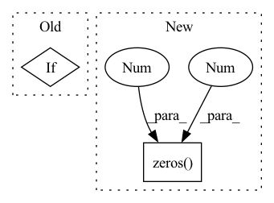

Pattern ID :732
Before Change
self.log_gamma = nn.Parameter(torch.zeros(input_dim))
self.beta = nn.Parameter(torch.zeros(input_dim))
if track_running_stats is True:
// Probably not a good idea
// Actually maybe OK - TODO test
self.register_buffer("running_mean", torch.zeros(input_dim))
self.register_buffer("running_var", torch.ones(input_dim))
self.reset_parameters()After Change
if affine is True:
self.gamma = nn.Parameter(torch.ones(1, input_channels, 1, 1))
self.beta = nn.Parameter(torch.zeros( 1, input_channels, 1 , 1 ) )
def forward(self, x):
In pattern: SUPERPATTERN
Frequency: 3
Non-data size: 2
Instances Fragment ID: 2449453
Project Name: justin-tan/high-fidelity-generative-compression
Commit Name: 0a03b6798daac7b297519d0d6a888f21e04a6d67
Time: 2020-08-06
Author: justan@student.unimelb.edu.au
File Name: hific/utils/normalization.py
M Class Name: ChannelNorm2D
N Class Name: ChannelNorm2D
M Method Name: __init__(5)
N Method Name: __init__(6)
M Parent Class: nn.Module
N Parent Class: nn.Module
M File Name: hific/utils/normalization.py
N File Name: hific/utils/normalization.py
M Start Line: 44
M End Line: 56
N Start Line: 45
N End Line: 46
Before Change
self.locality_strength = locality_strength
self.gating_param = nn.Parameter(torch.ones(self.num_heads))
self.apply(self._init_weights)
if use_local_init:
self.local_init(locality_strength=locality_strength)
def _init_weights(self, m):
if isinstance(m, nn.Linear):After Change
self.proj_drop = nn.Dropout(proj_drop)
self.locality_strength = locality_strength
self.gating_param = nn.Parameter(torch.ones(self.num_heads))
self.rel_indices: torch.Tensor = torch.zeros(1 , 1, 1, 3 ) // silly torchscript hack, won"t work with None
def forward(self, x):
B, N, C = x.shape Fragment ID: 2449455
Project Name: feng-lab/pytorch-image-models
Commit Name: b7de82e835682c2f90b6a5fc9fd325d1457193b6
Time: 2021-05-21
Author: rwightman@gmail.com
File Name: timm/models/convit.py
M Class Name: GPSA
N Class Name: GPSA
M Method Name: __init__(8)
N Method Name: __init__(9)
M Parent Class: nn.Module
N Parent Class: nn.Module
M File Name: timm/models/convit.py
N File Name: timm/models/convit.py
M Start Line: 71
M End Line: 91
N Start Line: 67
N End Line: 78
Before Change
self.norm_pix_loss = norm_pix_loss
self.in_chans = in_chans
self.L1_Loss = nn.L1Loss(reduction="none")
if mask_method == "random":
print("do random masking")
self.masking_handle = self.more_random_masking
elif mask_method == "complement":
print("do complement masking")After Change
self.time_stamp = time_stamp
// temporal embeddings
self.temp_embed = nn.Parameter(torch.zeros(1, self.time_stamp, embed_dim)) // learnable temporal embeddings for 2 time stamp
self.decoder_temp_embed = nn.Parameter(torch.zeros(1 , self.time_stamp, 1 , decoder_embed_dim) ) // learnable temporal embeddings for 2 time stamp
self.blocks = nn.ModuleList([
Block(embed_dim, num_heads, mlp_ratio, qkv_bias=True, qk_scale=None, norm_layer=norm_layer) Fragment ID: 2449454
Project Name: coperception/star
Commit Name: f61e469b9da4555ac2a23503c978a5923708d2fa
Time: 2022-06-03
Author: 954742885@qq.com
File Name: coperception/models/transformers/mae_base.py
M Class Name: MultiAgentMaskedAutoencoderViT
N Class Name: MultiAgentMaskedAutoencoderViT
M Method Name: __init__(16)
N Method Name: __init__(16)
M Parent Class: nn.Module
N Parent Class: nn.Module
M File Name: coperception/models/transformers/mae_base.py
N File Name: coperception/models/transformers/mae_base.py
M Start Line: 157
M End Line: 166
N Start Line: 115
N End Line: 118